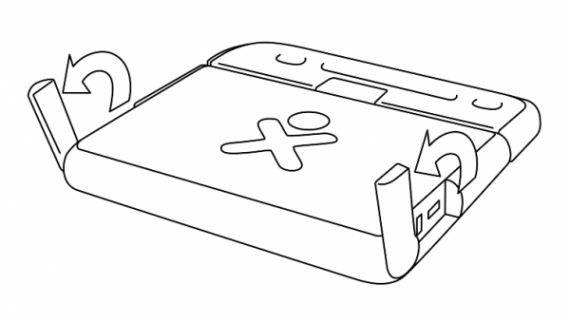
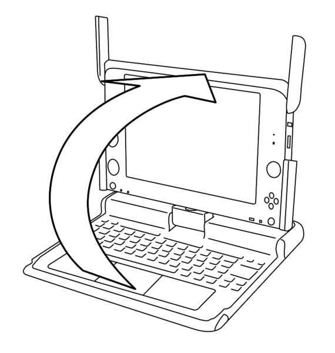
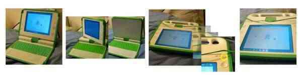

| Devenir volontaire | Index | Démarrer le XO |
Vous pouvez ouvrir, tourner et fermer le XO afin de le positionner de différentes manières.
1. Positionnez le XO afin que sa poignée soit éloignée de vous, puis tirez les deux antennes vers vous.

Soulevez le bord avant, situé sur le dessus de l'XO, puis levez-le en le poussant. Vous entendrez et sentirez un léger clic lorsque vous le souleverez pour la première fois.

Tourner le XO
Vous pouvez tourner le XO de façon à ce que l'écran soit à plat et couvre le clavier. Ceci vous permettra de manipuler plus facilement la manette de jeux, ou encore de lire un livre électronique (ebook) en utilisant les touches Flèche pour tourner les pages en avant et en arrière.

- Levez l'écran jusqu'à un angle de 90° puis abaissez les antennes.
- Tournez l'écran à un angle de 180° jusqu'à ce qu'il soit face à l'envers.
- Rabaissez l'écran sur le clavier.
- Appuyez sur la touche de rotation pour orienter l'écran.
| Devenir volontaire | Index | Démarrer le XO |